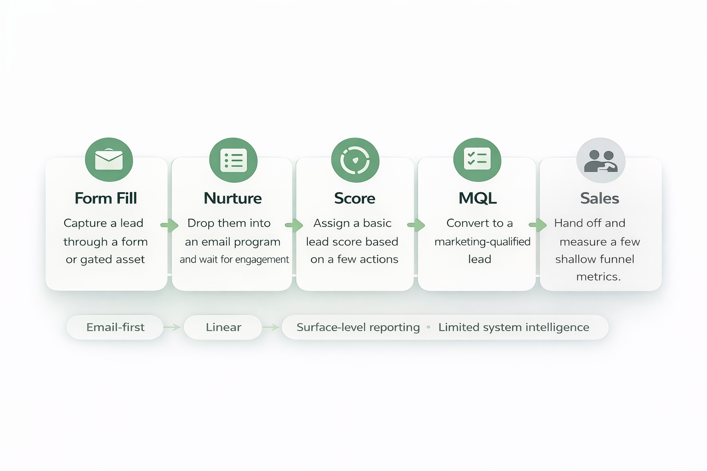

Communication
Clear priorities, visible timelines, and regular alignment across stakeholders.
Designing scalable Marketo systems that turn marketing activity into buyer intelligence, cleaner data, and clearer revenue insight.
I bring hands-on experience building, migrating, and optimizing Marketo systems for large organizations with demanding operational, data, and reporting needs.
Small teams do their best work when priorities are clear, ownership is explicit, and cross-functional communication is consistent.
Clear priorities, visible timelines, and regular alignment across stakeholders.
Marketing operations succeeds when marketing, sales, and data teams work as one system.
Defined ownership reduces friction, speeds execution, and strengthens accountability.
Many organizations treat Marketo primarily as a campaign engine — useful for email, forms, and lead handoff, but disconnected from deeper behavioral intelligence and revenue insight.

I think about Marketo as the behavioral data layer of the martech stack - collecting signals, structuring data, and feeding downstream systems that measure business impact.

Strong systems don’t happen by accident. The first build decisions shape long-term flexibility, reporting, and operational sanity.
Clear stage definitions, movement rules, and alignment with sales.
Clean structure, enrichment, consent handling, and CRM readiness.
Templates, naming standards, testing discipline, and operational consistency.
Ads, CRM, analytics, attribution, and custom systems all working together.
Website behavior, recency, depth of engagement, and account-level activity can signal evaluation patterns much earlier than static form data alone.
The scoring model should think like a statistician, not a campaign manager.
AI becomes useful when it classifies, normalizes, enriches, and interprets marketing data in ways that make the downstream system smarter.
Cleaner inputs create better segmentation, stronger scoring, improved routing, and more trustworthy analytics downstream.
Marketo should feed robust analytical environments where campaign interactions, behavioral signals, CRM data, and ad platform activity can be evaluated together.
Experience building enterprise Marketo systems. Leadership shaped by communication, collaboration, and clarity. A vision for marketing operations as a data and intelligence platform.